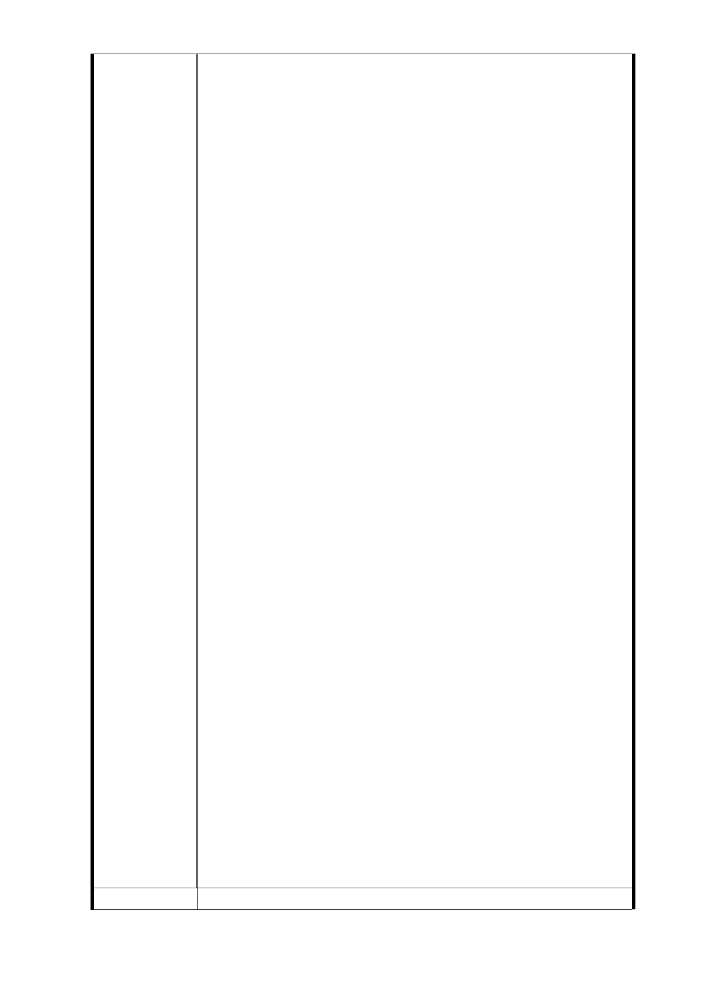

1.發揮土地最大效益，將土地都市計劃分區由第三種住宅
區，改為第三商業區，以符合捷運車站週邊之商業活動，
並促進地方繁榮，進而提高政府稅收
2.一樓店面係住戶賴以為生的工作場所，改建後應還給原有
一樓店面原始面積
3.角間（台語俗稱三腳窗）具有通風採光出入方便的優越性
及稀少性（每棟只有兩面）是故價位較高計價不得與一般
房價相同
4.原計劃於福德街 89 巷 x 通風口，改為出入口以增加通風
能量，進而方便松山家商上下學通車，減少跨越馬路風
險，增進交通安全（假如捷運系統必要通風口請改於廣慈
院區空曠地點以免影響空氣品質危害住戶健康）
5.房貸戶由市府墊付代償，於開發案完成後，請市府協調公
營行庫比照首購或勞貸條件申貸，償還墊付代償款項
6.土地及建築物之徵收應以市價徵收，不應以公告地價加成
（立法院已通過買賣不動產以市價課稅）以符合公平正義
7.人口遷移費搬遷補助以實際住戶為準（許多家長為孩童就
學原因戶籍遷出），應以里長證明為準
8.開發完成後分配建築物的分配，應以原住戶意願為先（不
應將地點較好之建築物由建設公司壟斷）
9.開發完成，樓地板面積比例，應與徵收時比率相同，以符
公平原則
10.住戶響應世界環保組織，拯救地球暖化危機，配台政府
節能減碳政策，於臨近住宅週遭，種植之樹木、果樹、
植栽，應以市價賠償
11.避免開發案完成，入住日期一再延宕，遙遙無期，應由
專案人士，訂定日期，逾期按日補償原住戶損失
12.交屋應讓住戶遷入即有生活機能
13.建築物格局施工品質，應由住戶代表會同專業人士監督
14.工程單位應於開發區內提供辦公室，供住戶代表開會使
用及檢視施工品質及進度
15.主結構體保固年限等於耐用年限樓板牆壁格間保固年限
20 年水電瓦斯廚廁設備保固期限 5 年（建商應提供總建
案 1％的保證金於具有公信力的團體供嗣後工程若有瑕
疵賠償住戶精神損失）
16.原住戶共推 5 至 11 人為住戶代表，負責監督、溝通、
協調聯合開發事宜
17.開發期中原住戶居住問題應妥為安置
建議辦法
- 74 -